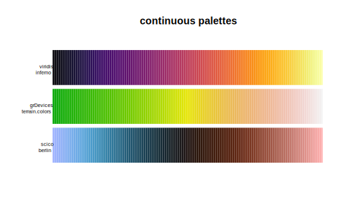
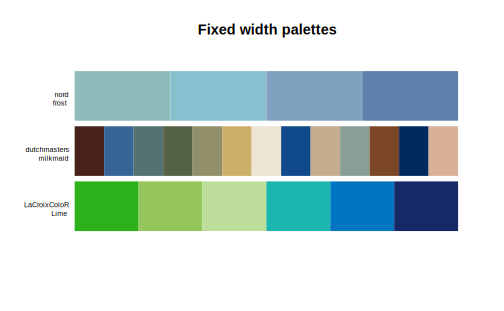
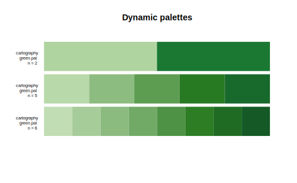
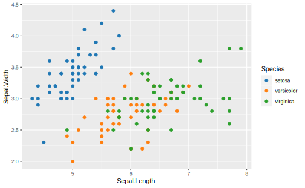

5 颜色
5.2 paletteer
paletteer 是对一系列 R 包中调色板的收集，涵盖 ggsci、ggthemes、RcolorBrewer、viridis等，共包含 32 个包的 1009 个调色板, 完整的列表可见：https://emilhvitfeldt.github.io/paletteer/#included-packages
paletteer 将调色板分为两大类：
- 连续型调色板：颜色数量没有限制，颜色之间的转换平滑

- 离散型调色板：又可继续分为固定宽度调色板 (fixed width palette) 和动态调色板 (dynamic palette)。固定宽度调色板只能提供有限的颜色数量，动态调色板可以根据要求自动生成任意数量的颜色


基于这样的分类，paletteer 提供了三个函数 paletteer_c、paletteer_d 和 paletteer_dynamic 分别用来生成连续型调色板、固定宽度调色板和动态调色板，通用的参数有：
palette: 制定调色板，格式为"package::name"n: 要生成的颜色数量，连续调色板和动态调色板必须指定，固定宽度调色板默认为全部颜色
direction = c(1, -1): 正序或逆序
一些例子：
# continuous palette
paletteer_c("scico::berlin", n = 20)
#> <colors>
#> #9EB0FFFF #7FABF0FF #5DA5DDFF #4093C0FF #307A9EFF #25617EFF #1C4960FF #153342FF #101F27FF #121112FF #200A03FF #2F0E00FF #421300FF #571B06FF #742C16FF #904430FF #AB5D4EFF #C6776CFF #E2928CFF #FFACACFF# fixed width palette
paletteer_d("nord::afternoon_prarie")
#> <colors>
#> #486090FF #6078A8FF #7890A8FF #90A8C0FF #F0D8C0FF #D6BBCFFF #A8C0C0FF #C0D8D8FF #A8A890FF# dynamic palette
paletteer_dynamic("cartography::blue.pal", 10)
#> <colors>
#> #B2DEF0FF #9FCFE5FF #8CC1DAFF #79B3CFFF #64A3C4FF #4B90B5FF #317DA7FF #206A94FF #17577CFF #0F4464FFscale_color_paletteer_c() 、 scale_fill_paletteer_c()、scale_color_paletteer_d()、scale_fill_paletteer_d() 可以为 ggplot2 对象设置颜色和填充的标度，调用参数和之前一样：
ggplot(iris, aes(Sepal.Length, Sepal.Width, color = Species)) +
geom_point() +
scale_color_paletteer_d("ggsci::category10_d3")